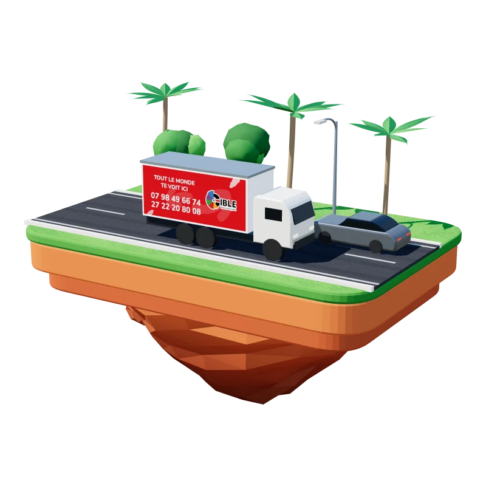

- Accueil
- Nos services
- Communication mobile
Expertise 02 · Communication mobile & présence urbaine
Votre message ne reste pas immobile. Il va à la rencontre de son audience.
La communication mobile transforme les rues, les axes de circulation, les marchés, les quartiers et les événements en espaces d’expression pour votre marque. Nous concevons des dispositifs capables d’aller vers les publics, de multiplier les points de contact et d’amplifier la couverture d’une campagne.
- 6Dispositifs mobiles
- 31Communes et villes
- 1994Depuis

Glissez pour faire pivoter
Affichage mobileCamions publicitaires
Nos dispositifs mobiles
Six façons d’aller vers votre audience.
Une solution particulièrement adaptée aux lancements, opérations promotionnelles, ouvertures de points de vente, campagnes de proximité et prises de parole événementielles. Cliquez sur un visuel pour le voir en 3D.
-
01
Camions publicitaires
Des surfaces mobiles à fort impact, pour un lancement ou plusieurs zones dans une même campagne.
-
02
Motos publicitaires
Agiles dans les zones denses et les quartiers de proximité.
-
03
Branding véhicules
Habillage partiel ou intégral de véhicules et de flottes.
-
04
Branding taxis & cars
Une présence répétée dans les flux urbains, pour la mémorisation.
-
05
Chevalets et dispositifs de proximité
Autour des marchés, des points de vente et des événements.
-
06
Roadshows et caravanes
Visibilité mobile, animation et interaction directe avec les publics.
Comment nous travaillons
Repérer, scénariser, déployer, rendre compte.
Une campagne mobile se prépare comme une tournée : au bon endroit, au bon moment, avec le bon message.
- 01
Repérer
Les lieux et les moments où votre cible est disponible.
- 02
Scénariser
Un dispositif, un rôle pour chaque équipier, un message.
- 03
Déployer
Logistique, matériel, équipes, autorisations.
- 04
Rendre compte
Fréquentation, contacts, photos horodatées.
Notre différence
Nos équipes sont formées par nous, pas louées à la journée. Ce qu’elles disent de votre marque, nous en répondons.
Parlons-en
Dites-nous où votre audience circule.
Nous définissons avec vous les zones, les itinéraires et les créneaux, puis nous rendons compte de chaque diffusion. Réponse sous 24 heures ouvrées.